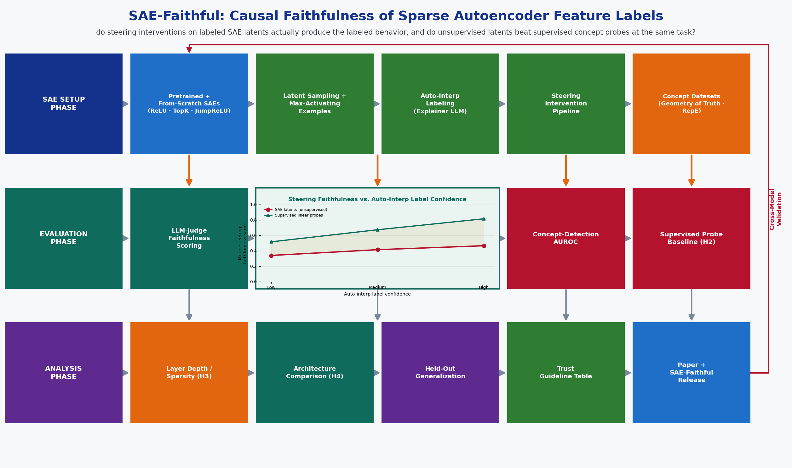

Sparse autoencoders (SAEs) trained on the internal activations of large language models are the
centerpiece of the current mechanistic-interpretability research program: they decompose a
model's dense, polysemantic activations into a much larger set of sparse, ostensibly
monosemantic "features," each of which can be given a human-readable label by an automated
interpretability pipeline (an explainer LLM shown the feature's max-activating text examples).
These labels are treated as explanations of what a feature represents and, increasingly, as a
basis for steering model behavior. But an auto-generated label is a plausible-sounding story
about a feature, not a proof that clamping the feature actually causes the labeled behavior --
the same gap that undermined faithfulness in classical feature-attribution methods like LIME and
SHAP. The goal of this project is to build a rigorous, reproducible benchmark that directly
measures whether SAE feature labels are causally faithful, using open-weight models and
pretrained SAEs small enough to run entirely on a single AWS g5.2xlarge instance (1x NVIDIA A10G,
24 GB VRAM, 8 vCPUs, 32 GiB RAM).
Key Objectives:
1. Obtain pretrained SAEs across multiple layers of two open-weight LLMs (GPT-2-small via
SAELens; Gemma-2-2B via Gemma Scope), and additionally train from-scratch ReLU, TopK (Gao et
al., 2024), and JumpReLU (Rajamanoharan et al., 2024) SAEs on one GPT-2-small layer to enable
a controlled architecture comparison.
2. Sample a stratified set of SAE latents per layer/model/architecture by activation frequency
(rare, medium, common) and run an automated interpretability labeling pipeline (Bills et al.,
2023 style: an explainer LLM shown each latent's max-activating examples produces a
natural-language label and a confidence score) to build a labeled-latent dataset.
3. For every labeled latent, run activation-steering interventions (clamping the latent at
several magnitudes during generation) and score, with an LLM judge validated against human
ratings, whether the steered continuations actually exhibit the labeled concept -- and
separately measure the latent's precision/recall as a concept detector on contrastive
concept-present/concept-absent prompts drawn from curated concept datasets.
4. Train fully supervised linear concept probes on the same models' residual-stream activations
for the identical target concepts, and run the same steering-faithfulness and
concept-detection protocol on probe-derived steering vectors, to directly compare unsupervised
SAE latents against a supervised baseline at matched concepts.
5. Characterize where causal faithfulness breaks down -- layer depth, latent activation
frequency/sparsity, SAE architecture, and auto-interp label confidence -- and package the full
pipeline -- SAE training/loading, auto-interp labeling, steering intervention, concept
detection, probe baseline, and the resulting benchmarking DataFrame -- as an open-source,
config-driven repository (SAE-Faithful).

Figure 1: Caption All resources below are publicly available for research use with no restricted access. The
project organizes them into four tiers: pretrained models and SAEs, a text corpus for mining
max-activating examples, concept datasets for the steering/detection protocol, and a held-out
generalization tier.
TIER 1 -- MODELS AND PRETRAINED SPARSE AUTOENCODERS:
1. GPT-2-small (124M) with pretrained residual-stream SAEs across all 12 layers, via SAELens'
hosted SAE repository: https://github.com/jbloomAus/SAELens
2. Gemma-2-2B with pretrained JumpReLU SAEs across multiple layers, via Gemma Scope (DeepMind):
https://huggingface.co/google/gemma-scope
3. From-scratch ReLU, TopK, and JumpReLU SAEs trained in Week 2 on one GPT-2-small layer's
residual stream (not downloaded), enabling a controlled same-layer architecture comparison
4. Neuronpedia's existing auto-interpretability labels/dashboards, used as an independent
cross-check on this project's own auto-interp pipeline: https://www.neuronpedia.org/
TIER 2 -- TEXT CORPUS FOR MAX-ACTIVATING EXAMPLE MINING:
5. OpenWebText (Gokaslan & Cohen, 2019) -- the standard public reproduction of GPT-2's training
distribution, used to find each SAE latent's top-activating text spans:
https://huggingface.co/datasets/Skylion007/openwebtext
6. The Pile (uncopyrighted subset, Gao et al., 2020) -- a broader-domain corpus used as a second
source of max-activating examples for the Gemma-2-2B latents:
https://huggingface.co/datasets/monology/pile-uncopyrighted
TIER 3 -- CONCEPT DATASETS FOR STEERING AND DETECTION (MAIN EVALUATION):
7. Geometry of Truth (Marks & Tegmark, 2023) -- curated true/false factual statement datasets
with a clean concept boundary, used for concrete factuality-concept probing:
https://github.com/saprmarks/geometry-of-truth
8. Representation Engineering (RepE) concept-pair datasets (Zou et al., 2023) -- contrastive
prompt pairs for concepts spanning sentiment, honesty, and other abstract behavioral
dimensions: https://github.com/andyzoujm/representation-engineering
9. A custom curated concept list spanning concrete/lexical concepts (e.g., specific topics,
named entities) to abstract/semantic concepts (e.g., sentiment, formality, refusal),
constructed in Week 7 to give the concreteness-vs-abstractness axis needed for H3/H4 explicit
coverage beyond what Geometry-of-Truth/RepE alone provide
TIER 4 -- HELD-OUT GENERALIZATION (evaluation only, not tuned on):
10. Pretrained SAEs for a third open-weight model not used in Weeks 1-12 (e.g., Llama-3.2-1B/3B
community SAEs hosted on SAELens/HuggingFace), used only in Week 12 as a final generalization
check on a model and layer set not used to develop the pipeline
DATASET / PIPELINE PREPARATION:
- Standardize every tier behind a common loader that emits (model, layer, SAE architecture,
latent id, auto-interp label, concept-dataset pairing) tuples, so every steering intervention
and every metric consumes an identical evaluation protocol regardless of tier
- Fix a stratified evaluation sample of latents per (model, layer, activation-frequency bucket)
with a documented random seed, and a fixed steering-magnitude grid used consistently across
every experiment in Phases 3-6
- No live web APIs are required at run time -- all corpora, concept datasets, and SAE checkpoints
are downloaded once in Weeks 1-2 and cached locally, keeping the pipeline reproducible and free
of flaky external dependencies
Sparse autoencoder interpretability is the fastest-moving current thread in mechanistic
interpretability and AI safety research: Bricken et al. (2023, "Towards Monosemanticity")
showed dictionary learning decomposes a small transformer's polysemantic neurons into sparse,
more interpretable features; Templeton et al. (2024, "Scaling Monosemanticity") scaled the same
approach to Claude 3 Sonnet and demonstrated that clamping individual features ("Golden Gate
Claude") produces visible, targeted behavior changes; Cunningham et al. (2023), Gao et al. (2024,
TopK SAEs), and Rajamanoharan et al. (2024, JumpReLU SAEs / Gemma Scope) have driven rapid
architectural progress; and Bills et al. (2023) introduced the now-standard automated
interpretability pipeline, where an explainer LLM reads a feature's max-activating text examples
and produces a human-readable label. SAE latents and their auto-generated labels are now widely
treated, in both research and applied safety work, as legitimate explanations of what a model
represents.
But an auto-generated label is fundamentally a plausible post-hoc story fit to a handful of
examples, and classical explainable-AI research has already shown that this kind of
example-driven explanation can be unfaithful -- LIME and SHAP attributions are well documented to
sometimes describe a model's behavior without actually being causally responsible for it. Whether
SAE feature labels have the same problem -- whether a label that looks confident and specific
actually predicts what happens when the feature is clamped -- is not yet systematically
benchmarked. The closest related work, RAVEL (Huang et al., 2024), evaluates whether
interpretability methods can disentangle distinct attributes in a representation, which is a
different question from whether a specific feature's auto-generated label is a causally faithful
description of that feature's effect on generation.
No existing published study directly benchmarks the causal faithfulness of SAE auto-interp labels
via steering interventions, across multiple SAE architectures and layers, against a fully
supervised linear-probe baseline at matched concepts, on open-weight models small enough for a
single-GPU student project. This project fills that gap.
WHY THIS PROJECT IS TIMELY AND PUBLISHABLE:
- Mechanistic interpretability via SAEs is arguably the single most active current thread in AI
safety research, with dedicated venues: the NeurIPS/ICML/ICLR workshops on interpretability and
mechanistic interpretability, and increasing coverage at ACL/EMNLP and in TMLR.
- The steering-faithfulness protocol (does clamping a labeled feature actually produce the
labeled behavior, scored and human-validated, not just assumed) is a clean, citable
methodological contribution distinct from yet another feature-labeling leaderboard, and is
directly reusable by future SAE studies regardless of which new architecture is released next.
- The supervised-probe baseline comparison (H2 below) directly tests a claim implicit in most SAE
papers -- that unsupervised dictionary learning discovers meaningful concepts "for free" --
against the simplest fully supervised alternative, echoing the "does the fancy method actually
beat the boring baseline" framing that has proven valuable elsewhere in ML benchmarking.
- A negative or null result (auto-interp labels are just as faithful as they look, or SAE latents
do not beat supervised probes) is just as publishable and useful to the interpretability
community as a positive one -- the project is designed so every outcome is a reportable
finding, not a failure condition.
- The entire pipeline -- two small open-weight models, pretrained SAEs, lightweight from-scratch
SAE training, and linear probes -- runs comfortably on one AWS g5.2xlarge, specifically so the
project stays tractable for a student team without a multi-GPU cluster.
PHASE 1: FOUNDATIONS & SAE SETUP (Weeks 1-2)
[Week 1: Environment & Pretrained SAE Loading]
- Install TransformerLens (model internals/hooks), SAELens (pretrained SAE loading/training),
the Neuronpedia API client, and an LLM-judge/explainer client (open-weight or API-based)
- Load pretrained SAEs for GPT-2-small (all 12 layers, via SAELens) and Gemma-2-2B (multiple
layers, via Gemma Scope); project structure: models/, saes/, autointerp/, steering/, probes/,
benchmarks/, notebooks/
- Create a model_registry.csv (model, layer, SAE architecture, checkpoint source, dictionary
size) and a run_matrix.csv enumerating every planned (model x layer x architecture x latent
sample) experiment up front, to keep the total run count bounded
[Week 2: From-Scratch SAE Training for the Architecture Comparison]
- Train ReLU, TopK (Gao et al., 2024), and JumpReLU (Rajamanoharan et al., 2024) SAEs from
scratch on one GPT-2-small layer's residual-stream activations (collected over an OpenWebText
sample), matching dictionary size and training budget across architectures
- Validate reconstruction loss and L0 sparsity against published reference numbers before
trusting any from-scratch SAE for later phases
PHASE 2: LATENT SAMPLING & AUTO-INTERPRETABILITY LABELING (Weeks 3-4)
[Week 3: Latent Sampling & Max-Activating Examples]
- Sample a stratified set of latents per (model, layer, architecture) by activation frequency
(rare, medium, common), and mine each sampled latent's max-activating text spans from Tier 2
(OpenWebText / Pile) via TransformerLens hooks
[Week 4: Automated Interpretability Labeling]
- Run the auto-interpretability pipeline (Bills et al., 2023 style: an explainer LLM reads a
latent's max-activating examples and produces a natural-language label plus a confidence
score) to build a labeled-latent dataset of roughly 500-800 latents
- Spot-check a subsample of labels against Neuronpedia's existing dashboards as an independent
cross-check on the labeling pipeline itself
PHASE 3: STEERING-INTERVENTION FAITHFULNESS PROTOCOL (Weeks 5-6)
[Week 5: Activation-Steering Pipeline]
- Implement the activation-steering intervention (clamp a latent's activation to fixed
magnitudes across a magnitude grid during generation, via TransformerLens hooks) and generate
steered continuations for a fixed prompt set per labeled latent
[Week 6: LLM-Judge Faithfulness Scoring]
- Build the LLM-judge protocol that scores whether a steered continuation exhibits the labeled
concept (0-1 faithfulness score per latent per magnitude); both students independently rate a
validation subsample to check judge reliability before trusting it for the full sweep
PHASE 4: CONCEPT-INJECTION DETECTION PROTOCOL (Weeks 7-8)
[Week 7: Contrastive Concept Datasets]
- Assemble Tier 3 contrastive concept-present/concept-absent prompt sets from Geometry of Truth,
RepE concept pairs, and a custom concrete-to-abstract concept list built this week to give
explicit coverage of the concreteness axis needed for later analysis
[Week 8: Concept-Detection Scoring & Master Faithfulness Table]
- Measure each labeled latent's activation as a concept detector (precision/recall/AUROC across
the contrastive prompt sets); assemble the master per-latent faithfulness table: (model x
layer x architecture x latent) -> auto-interp label, steering-faithfulness score,
concept-detection AUROC -- resolving the core causal-faithfulness question
PHASE 5: SUPERVISED PROBE BASELINE (Weeks 9-10)
[Week 9: Linear Concept Probes]
- Train linear (logistic-regression) concept probes directly on residual-stream activations for
the identical target concepts used in Phase 4, at matched layers -- the fully supervised
comparison point
[Week 10: Probe Steering & Detection, Head-to-Head Comparison]
- Run the identical steering-faithfulness (Phase 3) and concept-detection (Phase 4) protocol on
probe-derived steering vectors; directly compare unsupervised SAE latents against supervised
probes at matched concepts -- directly resolving H2
PHASE 6: CROSS-CONDITION ANALYSIS (Weeks 11-12)
[Week 11: Layer Depth & Sparsity Analysis]
- Analyze steering-faithfulness and concept-detection AUROC as a function of layer depth and
latent activation frequency/sparsity across the master faithfulness table -- directly resolving
H3
[Week 12: Architecture & Label-Confidence Analysis, Held-Out Check]
- Analyze faithfulness as a function of SAE architecture (ReLU vs. TopK vs. JumpReLU, from the
Week 2 controlled comparison) and of auto-interp label confidence -- directly resolving H1 and
H4
- Evaluate the best-performing configuration on the held-out Tier 4 model/layer set to test
whether the Weeks 3-11 findings generalize beyond the models used to develop the pipeline
- Formally state the project's four central hypotheses being tested against the master table:
H1: Do confident, specific-sounding auto-interp labels predict causal steering faithfulness, or
are label confidence and faithfulness decoupled?
H2: Do unsupervised SAE latents match or exceed supervised linear probes at concept-detection
precision/recall and steering faithfulness, at matched target concepts?
H3: Does causal faithfulness degrade with layer depth (more abstract, later-layer
representations) or with latent activation sparsity/rarity?
H4: Does SAE architecture (ReLU vs. TopK vs. JumpReLU) trade off reconstruction/sparsity
quality against causal faithfulness of the resulting labeled features?
PHASE 7: STATISTICAL TESTING & HUMAN VALIDATION (Weeks 13-14)
[Week 13: Statistical Testing]
- Regression of steering-faithfulness score on label confidence, layer depth, latent sparsity,
and SAE architecture, with significance tests; bootstrapped confidence intervals on the
SAE-vs-probe faithfulness and detection-AUROC deltas, directly resolving H1, H3, and H4
[Week 14: Human Evaluation of the LLM Judge]
- Both students independently score a stratified sample of steered generations (blinded to
latent/condition) to validate the Week 6 LLM-judge faithfulness scores; compute inter-annotator
agreement (Cohen's kappa) and correlate human judgments with the automatic judge, reporting the
correlation explicitly rather than assuming it
PHASE 8: GUIDELINES, PAPER, AND CODE RELEASE (Weeks 15-16)
[Week 15: Research Paper Draft]
Paper structure (8-10 pages, NeurIPS/ICML/ICLR interpretability-workshop or TMLR format):
1. Abstract: motivation, SAE-Faithful scope, key findings (H1-H4)
2. Introduction: the causal-faithfulness gap in SAE auto-interpretability
3. Related Work: SAEs (Bricken, Templeton, Cunningham, Gao, Rajamanoharan), automated
interpretability (Bills et al.), RAVEL, classical XAI faithfulness (LIME/SHAP)
4. SAE-Faithful: latent sampling, auto-interp labeling, steering protocol, concept detection,
probe baseline
5. Results: steering faithfulness vs. label confidence, SAE vs. probe, layer/sparsity effects
6. The Architecture-Faithfulness Trade-off (ReLU vs. TopK vs. JumpReLU)
7. Practical Guidelines for Trusting (or Not Trusting) an SAE Auto-Interp Label
8. Conclusion & Future Work: circuit-level faithfulness, cross-model feature universality
[Week 16: Code Release & Documentation]
- Publish the SAE-Faithful GitHub repository: config-driven
run_benchmark.py --model all --layer all --architecture all
- Jupyter notebooks: one per phase and one cross-condition analysis notebook
- README with quickstart, single-GPU reproduction guide, and the auto-interp/steering API
- requirements.txt with pinned dependencies; final presentation
Week 1: Pretrained SAEs loaded (GPT-2-small, Gemma-2-2B), model_registry.csv, run_matrix.csv
Week 2: From-scratch ReLU/TopK/JumpReLU SAEs trained on one layer; sparsity/loss validated
Week 3: Stratified latent sample drawn; max-activating examples mined from Tiers 2 corpora
Week 4: Auto-interp labeling pipeline run; ~500-800 labeled-latent dataset built
Week 5: Activation-steering intervention pipeline implemented; steered continuations generated
Week 6: LLM-judge faithfulness scoring built and validated against a human-rated subsample
Week 7: Contrastive concept datasets assembled (Geometry of Truth, RepE, custom concept list)
Week 8: Concept-detection scoring complete; master per-latent faithfulness table assembled
Week 9: Supervised linear concept probes trained at matched concepts and layers
Week 10: Probe steering/detection run; SAE-vs-probe head-to-head comparison -- H2
Week 11: Layer-depth / sparsity faithfulness analysis -- H3
Week 12: Architecture / label-confidence analysis -- H1, H4; Tier 4 held-out generalization check
Week 13: Regression/significance testing on faithfulness drivers; bootstrapped CIs
Week 14: Human validation of the LLM judge; inter-annotator agreement computed
Week 15: Research paper draft (NeurIPS/ICML/ICLR interpretability workshop or TMLR format)
Week 16: SAE-Faithful code release, README, notebooks, final presentation
TOTAL: 16 weeks (one semester)
KEY MILESTONES:
- Week 4: Labeled-latent dataset complete across models, layers, and SAE architectures
- Week 8: Steering-faithfulness and concept-detection master table complete
- Week 10: Supervised-probe baseline comparison complete (H2 resolved)
- Week 12: All hypothesis tests (H1-H4) resolved; held-out generalization check complete
- Week 14: LLM-judge faithfulness scores validated against human ratings
- Week 16: Paper submitted; code released to the SAE-Faithful GitHub repository
DELIVERABLES BY WEEK 16:
- A causal-faithfulness benchmark spanning two open-weight LLMs, multiple layers, three SAE
architectures, and a supervised linear-probe baseline, evaluated via steering interventions and
contrastive concept detection
- Quantitative answers to whether SAE auto-interp label confidence predicts causal faithfulness,
whether SAE latents beat supervised probes, and how faithfulness varies with depth/sparsity/
architecture
- A human-validated LLM-judge protocol for scoring steering faithfulness
- A practical guideline table for when to trust an SAE auto-interp label
- Research paper draft (8-10 pages)
- Open-source SAE-Faithful repository with reproducible notebooks
RECOMMENDED: 2-3 students
ROLE DISTRIBUTION FOR 2 STUDENTS:
Student 1: SAE Infrastructure, Auto-Interpretability & Steering Faithfulness
- Responsibilities: load/train pretrained and from-scratch SAEs (ReLU/TopK/JumpReLU), the
auto-interp labeling pipeline, the activation-steering intervention pipeline and LLM-judge
faithfulness scoring, architecture-comparison analysis (H1, H4)
- Skills: deep learning / transformer internals, Python, prompt engineering, TransformerLens
Student 2: Concept Datasets, Supervised Probes & Statistical Testing
- Responsibilities: contrastive concept-dataset assembly, concept-detection scoring, supervised
linear-probe training and its steering/detection comparison against SAE latents (H2), master
benchmarking DataFrame, layer-depth/sparsity analysis (H3), regression/significance testing
- Skills: classical ML (logistic regression/probing), statistical testing, Python, evaluation
design
SHARED RESPONSIBILITIES (both students):
- Cross-condition analysis, human validation of the LLM judge, guideline synthesis, paper
writing, code documentation, final presentation
- Weekly integration meetings: every model/architecture feeds the same fixed latent-sampling and
evaluation protocol from Phase 1
FOR 3 STUDENTS (optional third role):
Student 3: Benchmarking Infrastructure, Evaluation & Visualization
- Responsibilities: build the config-driven multi-run experiment orchestrator and run_matrix.csv
tracker, own the max-activating-example mining and latent-sampling pipeline, design the human
LLM-judge-validation protocol, produce all publication-quality figures (faithfulness-vs-
label-confidence scatter, SAE-vs-probe comparison plots, layer/sparsity heatmaps,
architecture-comparison plots), maintain the SAE-Faithful repository structure
TECHNICAL CHALLENGES AND SOLUTIONS:
1. The LLM Judge Scoring Steering Faithfulness Could Itself Be Unreliable:
- ISSUE: If the judge's faithfulness scores are noisy or biased, the entire benchmark inherits
that noise
- SOLUTION: Week 6 validates the judge against a human-rated subsample before trusting it for the
full sweep, and Week 14 re-validates it with an independent human audit, reporting the
human-judge correlation explicitly rather than assuming it
2. Comparing Unsupervised SAE Latents to Supervised Probes Is an Apples-to-Oranges Design by
Construction:
- ISSUE: Probes are trained directly on the target concept while SAE latents are discovered
unsupervised, which could look like an unfair comparison
- SOLUTION: This asymmetry is the entire research question, not a confound to remove -- SAEs are
evaluated exactly as they are used in practice (unsupervised, then labeled post-hoc) against
probes exactly as they are used in practice (supervised), and the paper states this explicitly
as the studied factor rather than a nuisance variable
3. SAE Labels May Simply Be Faithful (Null Result):
- ISSUE: The central hypothesis (H1) could fail to hold -- auto-interp labels might already be
reliably faithful, with no gap to report
- SOLUTION: A null result is a valid, reportable, and publishable finding (it would validate the
auto-interp pipeline the field already relies on); the paper narrative and analysis pipeline are
designed from Week 1 to accommodate either outcome
4. Steering Effects Can Be Context- or Magnitude-Dependent:
- ISSUE: A latent might faithfully produce its labeled behavior at one clamping magnitude or
prompt but not another, complicating a single faithfulness score per latent
- SOLUTION: Sweep a fixed magnitude grid and a fixed prompt set per latent (Week 5), and report
faithfulness as a curve over magnitude rather than collapsing prematurely to one number
5. From-Scratch SAE Training May Not Match Published Reconstruction/Sparsity Numbers:
- ISSUE: A poorly trained from-scratch SAE would contaminate the Week 2 architecture-comparison
arm (H4)
- SOLUTION: Week 2 validates reconstruction loss and L0 sparsity against published reference
numbers before any from-scratch SAE is used in later phases; pretrained SAEs (Tier 1a/1b) are
used for every other analysis so H4 is the only arm depending on from-scratch training quality
6. Total Run Count Across the Full Sweep:
- ISSUE: 2 models x multiple layers x 3-4 SAE architectures x hundreds of latents x a steering-
magnitude grid x a probe baseline could balloon the compute and annotation budget
- SOLUTION: The full run matrix is enumerated in run_matrix.csv in Week 1 so the total is
bounded and auditable before any runs begin; the architecture comparison (H4) is restricted to
one GPT-2-small layer rather than the full model
7. Library / Version Drift:
- ISSUE: TransformerLens, SAELens, and the Gemma Scope checkpoints are all actively maintained;
API changes could break reproducibility mid-semester
- SOLUTION: Pin all dependency versions in requirements.txt from Week 1
RISK MITIGATION TIMELINE:
- Weeks 1-3: Verify pretrained-SAE reconstruction quality and from-scratch SAE training against
published reference numbers before the main labeling/steering sweep begins
- Weeks 4-11: Monitor per-model/layer run completion and intermediate faithfulness scores as each
phase comes online; checkpoint intermediate results after every phase
- Weeks 12-13: Cross-check held-out Tier 4 results against the Tiers 1-3 findings for consistency
before finalizing H1-H4
- Week 14: Independent human audit of the LLM-judge faithfulness scores by both students
- Weeks 15-16: 3-day code freeze for README and notebook review before public release